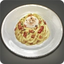
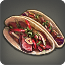
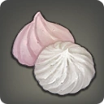
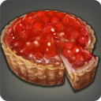

有任何需求可向您召引的使徒、空閒的引路人或司祭提出

以鹹香蛋奶與柔軟麵體交織而成，獻予甘願奉獻之人。

炙烤牛肉覆於展翼般的薄餅之上，交雜鮮紅醬汁獻出最溫熱的內裏。
新薯熬製而成的冷湯，以清冷柔和的滋味迎接寬恕。
多種濃厚海味融於茄紅湯底之中，鮮美卻令人難以久視。
甜潤香蕉氣息在舌尖緩慢沉降，宛如祝禱結束後殘留的餘韻。
濃郁番茄香氣覆入口中，宛若在赤色河流中完成洗禮。

酸甜蘋果泥所製果糕，適合於長夜來臨前靜靜享用。

鮮紅奇異果肉覆於酥脆塔皮之上，如禁忌信仰被甜美地切開。
若一道料理能代表一個人，那麼它便是其靈魂留下的註腳。
※ 餐點名稱取材自宗教儀式與歷史酷刑，相關內容可能包含血腥描寫及圖像，請謹慎查閱。